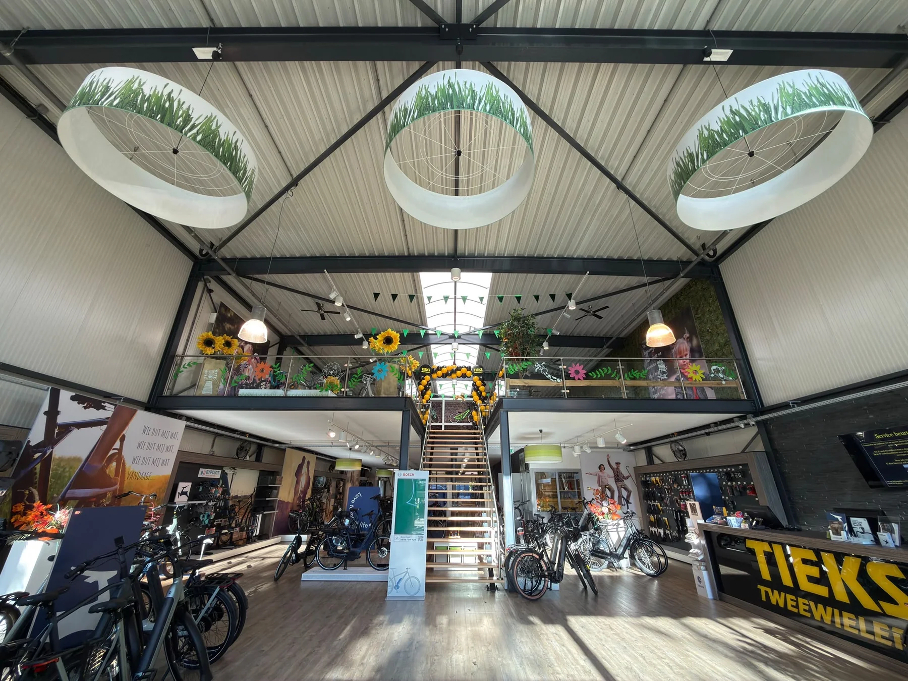
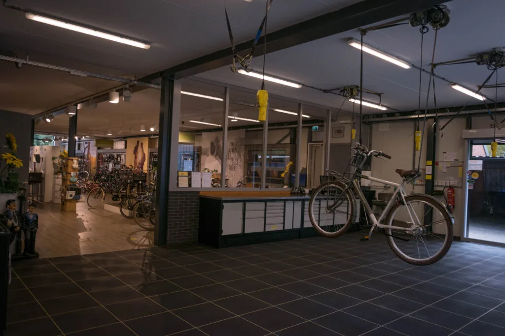
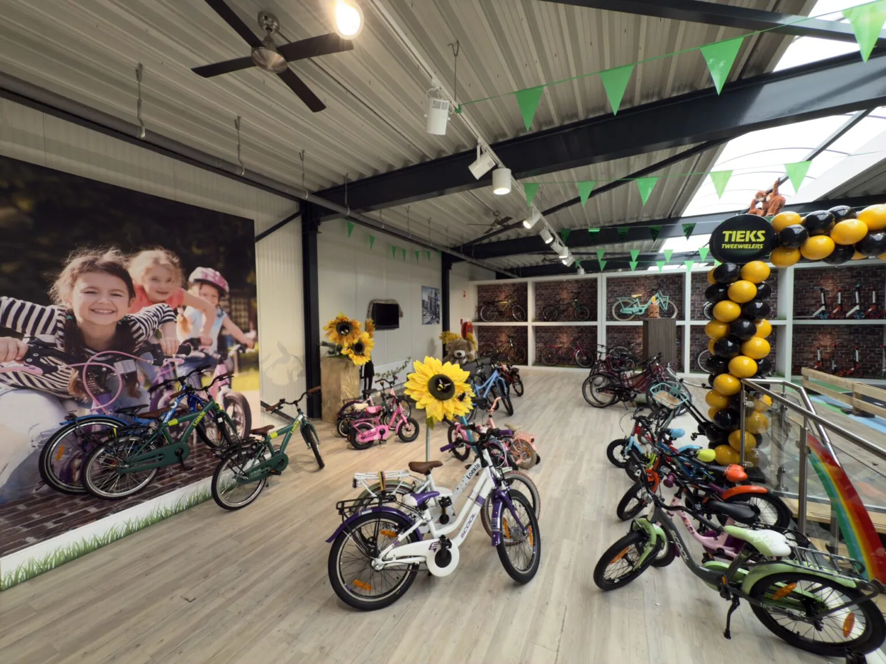
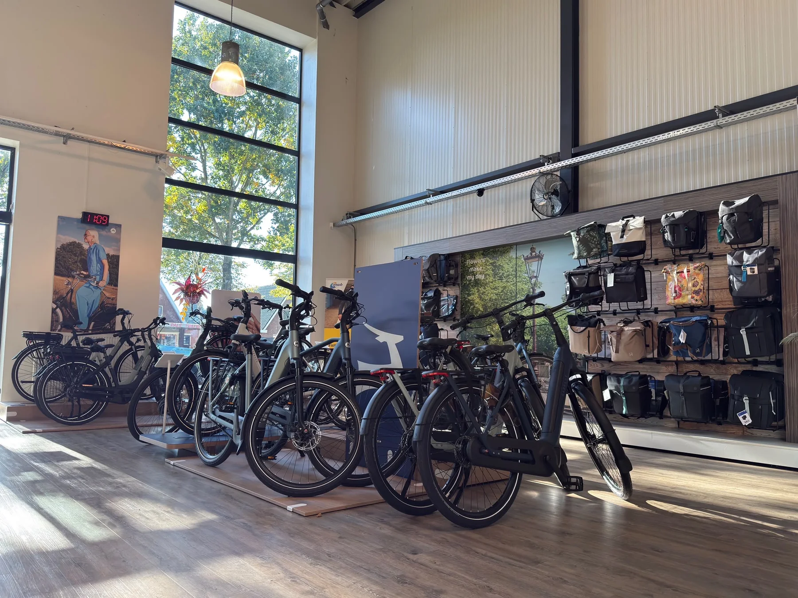
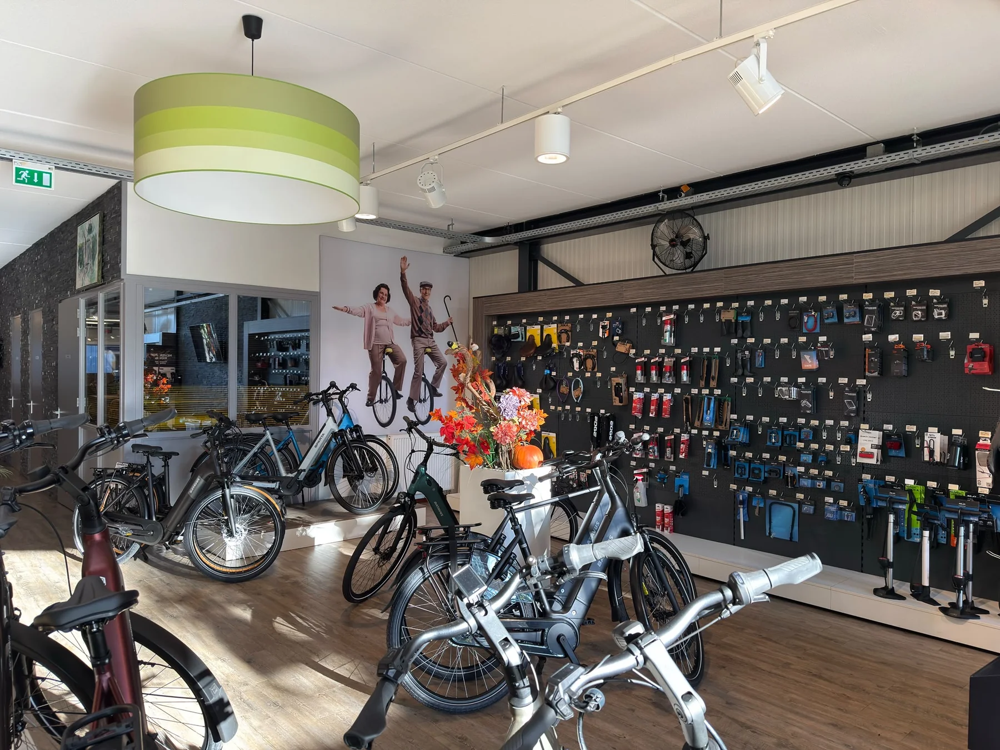
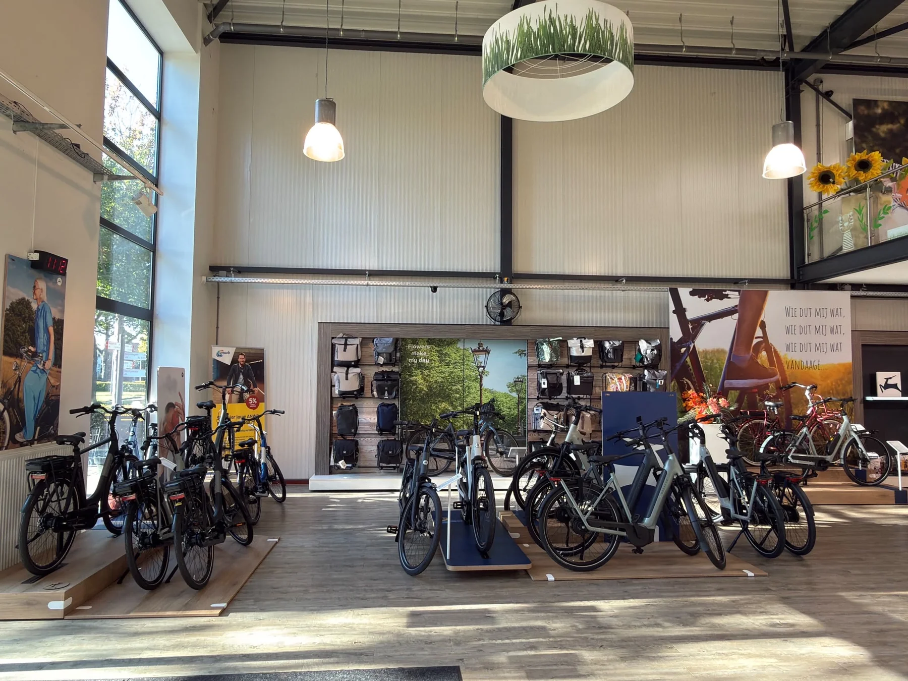

Een nieuwe fiets kopen
Bekijk het actuele aanbod e-bikes en stadsfietsen, vergelijk modellen en kom proefrijden.
Naar het assortiment →
Ontdek kwaliteitsfietsen, persoonlijk advies en vakkundige service. Al meer dan 30 jaar uw vertrouwde fietsenwinkel in Nieuw-Weerdinge.
Al sinds 1995 draait het bij Tieks Tweewielers om méér dan alleen fietsen.
Of u nu op zoek bent naar een comfortabele e-bike, een betrouwbare stadsfiets of de eerste fiets voor uw kind: bij ons staat persoonlijke aandacht centraal.
Met een uitgebreid assortiment, deskundig advies en een eigen moderne werkplaats helpen wij u niet alleen bij het vinden van de juiste fiets, maar zorgen we er ook voor dat u jarenlang met plezier blijft fietsen.
Van de eerste proefrit tot vakkundig onderhoud en reparaties: bij Tieks kunt u ook ná uw aankoop terecht voor deskundige service.
Meer dan 30 jaar ervaring. Persoonlijke service. Vertrouwd in Nieuw-Weerdinge.
Tieks Tweewielers — Service maakt het verschil.
Tieks is geen anonieme webshop. U kunt fietsen echt bekijken, vergelijken en proefrijden. Daarna blijft dezelfde winkel bereikbaar voor onderhoud, reparatie en technische service.
Bekijk het actuele aanbod e-bikes en stadsfietsen, vergelijk modellen en kom proefrijden.
Naar het assortiment →Van servicebeurt tot technische storing: de eigen werkplaats helpt u weer op weg.
Bekijk werkplaats →Kom langs met uw wensen. Het team helpt u gericht vergelijken op gebruik, comfort en techniek.
Kom langs →Van comfortabele e-bikes tot betrouwbare stadsfietsen. Bekijk een selectie van modellen en richtprijzen. Informeer in de winkel naar uitvoering, actuele prijs en beschikbaarheid.

In de ruime, moderne werkplaats worden reparaties uitgevoerd, e-bikes technisch onderhouden en nieuwe fietsen afgemonteerd en afgesteld.
Persoonlijke service, deskundig advies en praktische ondersteuning bij aankoop en onderhoud.
Woont u binnen 25 kilometer rijafstand van onze winkel in Nieuw-Weerdinge? Bekijk de rijafstand en ontdek onze gratis haal- en brengservice voor fietsreparaties.

Nieuwe en gebruikte kinderfietsen, loopfietsen, meegroeifietsen, steps en accessoires. Voor de allerkleinsten is er een testparcours om rustig en veilig te proberen.
Bij Tieks Tweewielers vindt u naast fietsen ook een ruim assortiment fietstassen en accessoires. Ontdek het assortiment in onze winkel in Nieuw-Weerdinge.


Al ruim 30 jaar in Nieuw-Weerdinge
Sinds 1995 draait Tieks om fietsen, techniek en service die ook ná de aankoop blijft.

Of breng uw huidige fiets langs voor onderhoud en reparatie. U vindt Tieks aan het Weerdingerkanaal in Nieuw-Weerdinge.